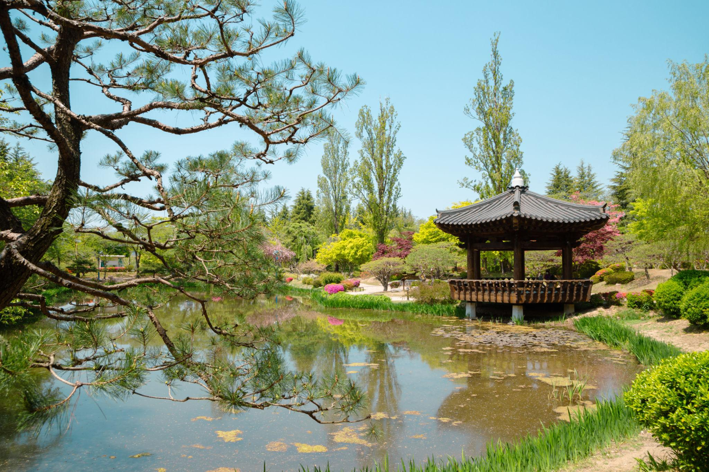

ESTJ 추천 여행지
경상북도 경주

추천 이유
ESTJ는 계획적이고 효율적인 여행을 선호하는 성향입니다. 경주는 역사 유적지와 관광 시설이 잘 정리되어 있어 동선을 짜기 쉽고, 보문관광단지처럼 다양한 즐길 거리가 모여 있어 안정적인 여행 코스를 구성하기 좋습니다.
추천 여행 코스
- 보문관광단지
- 경주월드
- 경주엑스포대공원
- 경주타워
- 솔거미술관
- 보문호수 산책로
추천 포인트
- 역사와 테마파크를 함께 즐길 수 있음
- 계획적인 여행 동선 구성에 적합함
- 가족·친구와 함께 방문하기 좋은 관광지
- 볼거리와 즐길 거리가 한곳에 모여 있음